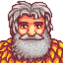
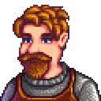

Abigail
Conocer personaje
Vive con Pierre y Caroline y mantiene una amistad cercana con Sam y Sebastian.
Pista: Le encantan la amatista, la anguila picante y la calabaza.
Ver ficha en la Wiki →Conocé a quienes convierten Pelícano en un lugar para quedarse.
La amistad en Stardew Valley no se trata sólo de llenar una barra: acercarte a cada habitante y recordar lo que le importa desbloquea posibilidades e información.
La amistad puede llevarte a nuevos diálogos, eventos y fragmentos de historia que no descubrirías de otra manera. Conocer a alguien puede ser complicado, pero cada personaje tiene sus horarios, gustos, lugares donde suele pasar el tiempo.
Vive con Pierre y Caroline y mantiene una amistad cercana con Sam y Sebastian.
Pista: Le encantan la amatista, la anguila picante y la calabaza.
Ver ficha en la Wiki →
Se mudó al Valle para perseguir su sueño artístico y vive sola en una pequeña cabaña.
Pista: Le gustan especialmente la ensalada, el queso de cabra y la trufa.
Ver ficha en la Wiki →
Vive en el sótano de Robin y está muy vinculado a los ordenadores, los cómics y la ciencia ficción.
Pista: Le encantan la obsidiana, la lágrima helada y el sashimi.
Ver ficha en la Wiki →
La carpintera del pueblo. Su trabajo conecta directamente con las mejoras y construcciones de la granja.
Pista: Entre sus regalos favoritos están el espagueti y el melocotón.
Ver ficha en la Wiki →
Una figura central en la organización del pueblo y en varios de sus acontecimientos.
Pista: Cumpleaños: Primavera 7. Le encantan el chile y el estofado vegetal.
Ver ficha en la Wiki →
Vive y trabaja frente al mar; es una de las primeras puertas de entrada a la pesca.
Pista: Cumpleaños: Verano 24. Le encantan la calabaza, el diamante y el esturión.
Ver ficha en la Wiki →
Es un joven enérgico al que le apasiona la música y pasa buena parte de su tiempo tocando la guitarra, practicando con su banda y reuniéndose con sus amigos.
Pista: Le encantan la pizza, el bollito de arce, el higo chumbo y el ojo de tigre.
Ver ficha en la Wiki →
Vive con Pam y suele pasar sus días leyendo, ayudando a los niños del pueblo y recorriendo distintos rincones de Pelícano.
Pista: Le encantan la amapola, el diamante, la esmeralda y el melón.
Ver ficha en la Wiki →
Su tienda es fundamental para entrar en la crianza de animales y conseguir alimento y suministros del rancho.
Ver ficha en la Wiki →
Vive cerca de las minas y ayuda a mostrar una forma de vivir el Valle fuera de las estructuras del pueblo.
Ver ficha en la Wiki →
Mejora herramientas y procesa geodas; planificar una visita a su herrería puede ahorrar días perdidos en la granja.
Ver ficha en la Wiki →Es una puerta de entrada a la parte más extraña y fantástica del Valle, y su historia se relaciona con los secretos del mundo.
Ver ficha en la Wiki →